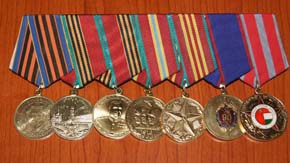
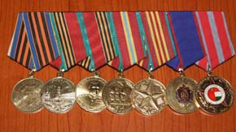
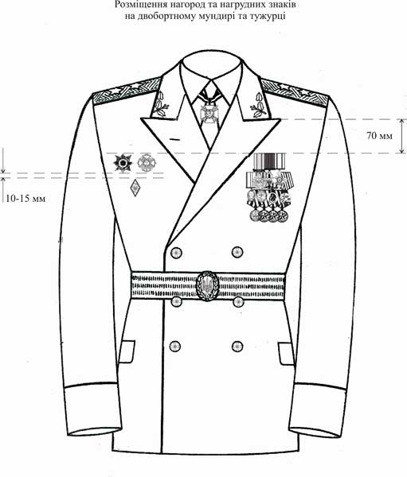

Нагороди ЗСУ
Порядок носіння орденів, медалей та інших відзнак на парадній формі одягу військовослужбовців Збройних Сил України.
1. Загальні положення
1.1. Тимчасовий порядок носіння орденів, медалей та інших відзнак на парадній формі одягу військовослужбовців Збройних Сил України (далі – Порядок) роз’яснює послідовність розміщення на парадній формі одягу знаків державних нагород України, заохочувальних відзнак Міністерства оборони України, почесних нагрудних знаків начальника Генерального штабу – Головнокомандувача Збройних Сил України, почесних нагрудних знаків командувачів видів Збройних Сил України, державних та відомчих нагород колишнього СРСР, іноземних держав, нагород міжнародних організацій (далі – нагороди).
1.2. Обов’язковими для носіння при парадній формі одягу є:
-ордени “Золота Зірка” та Держави звання Герой України;
-ордени та медалі України;
-нагрудні знаки до почесних звань України;
-нагрудні знаки до державних премій України;
-президентські відзнаки;
-заохочувальні відзнаки Міністерства оборони України;
-почесні нагрудні знаки начальника Генерального штабу Головнокомандувача Збройних Сил України;
-почесні нагрудні знаки командувачів видів Збройних Сил України.
1.3. Генерали армії України при парадному мундирі носять спеціальну відзнаку генерала армії України – Зірку генерала армії України на шийній стрічці.
1.4. Дозволяється носити за власним бажанням:
-державні та відомчі нагороди колишнього СРСР;
-державні та відомчі нагороди іноземних держав;
-нагороди Організації Об’єднаних Націй;
-нагороди Організації Північноатлантичного договору.
Забороняється носіння державних та відомчих нагород іноземних держав, нагород Організації Об’єднаних Націй та Організації Північноатлантичного договору, якщо військовослужбовець не нагороджений хоча б одною державною нагородою України, заохочувальною відзнакою Міністерства оборони України або почесним нагрудним знаком начальника Генерального штабу – Головнокомандувача Збройних Сил України.
1.5. Забороняється носіння нагород не передбачених цим Порядком.
1.6. Знаки орденів України, які носяться на шийних стрічках, розміщують таким чином, щоб кільце, через яке проходить стрічка, знаходилося безпосередньо на вузлі краватки або трохи нижче нього. Стрічка повинна знаходитися під коміром сорочки. Одночасно дозволяється носити не більше двох знаків орденів на шийних стрічках, причому знак одного ордена може частково прикривати знак іншого. За наявності Зірки генерала армії України знаки орденів України на шийних стрічках розміщуються нижче неї, при цьому може носитися лише один знак ордена на шийній стрічці.
1.7. Зірки орденів України носять з лівого боку грудей нижче знаків нагород на колодках (стрічках).
1.8. Нагороди на колодках (стрічках), які носяться з лівого боку грудей (крім орденів “Золота Зірка” та Держави звання Герой України), розміщують горизонтальними рядами у порядку старшинства. В одному ряду не може бути більше ніж п’ять нагород. У верхньому ряду не може бути більше нагород, ніж у нижньому. Колодки (стрічки) нагород у верхньому ряду вирівнюють за верхніми краями колодок (стрічок), у нижніх рядах – за нижніми краями колодок (стрічок).
Нагороди розміщують:
на двобортному мундирі та тужурці – так, щоб верхні краї колодок (стрічок) верхнього ряду розташовувалися нижче рівня кута лацкана на 70 мм;
на однобортному кітелі, кітелі морської піхоти та камуфльованій куртці – так, щоб нижні краї колодок (стрічок) нижнього ряду були на рівні клапана нагрудної кишені;
на форменці (фланелівці) – так, щоб верхні краї колодок (стрічок) верхнього ряду розташовувалися вище кута вирізу коміра на 70 мм.
1.9. Знаки нагород, які носяться з правого боку грудей, розміщують горизонтальними рядами від центру грудей до краю у порядку старшинства. При цьому умовні центри знаків нагород повинні бути на одному рівні. Відстань між рядами: 10-15 мм. У верхньому ряду не може бути більше нагород, ніж у нижньому.
1.10. Почесні нагрудні знаки командувачів видів Збройних Сил України розміщують після заохочувальних відзнак Міністерства оборони України та почесних нагрудних знаків начальника Генерального штабу – Головнокомандувача Збройних Сил України або нижче них.
1.11. Державні та відомчі нагороди колишнього СРСР розміщують після державних нагород України, заохочувальних відзнак Міністерства оборони України, почесних нагрудних знаків начальника Генерального штабу – Головнокомандувача Збройних Сил України, почесних нагрудних знаків командувачів видів Збройних Сил України або нижче них у порядку, визначеному розділом 5 наказу Міністра оборони СРСР від 04.03.88 № 250 (Додаток 2 до цього Порядку).
1.12. Державні та відомчі нагороди іноземних держав, нагороди Організації Об’єднаних Націй та Організації Північноатлантичного договору розміщують після державних нагород України, заохочувальних відзнак Міністерства оборони України, почесних нагрудних знаків начальника Генерального штабу – Головнокомандувача Збройних Сил України, почесних нагрудних знаків командувачів видів Збройних Сил України, державних та відомчих нагород колишнього СРСР або нижче них у порядку часу нагородження.
При одночасному носінні нагород Організації Об’єднаних Націй та Організації Північноатлантичного договору нагороди Організації Об’єднаних Націй розміщують перед нагородами Організації Північноатлантичного договору.
2. Порядок носіння державних нагород України
2.1. Порядок носіння орденів звання Герой України
2.1.1. Ордени “Золота Зірка” та Держави звання Герой України носять з лівого боку грудей вище інших державних нагород України. При цьому знак ордена може частково прикривати колодки (стрічки) інших нагород. За наявності обох орденів їх розміщують у порядку часу нагородження.
2.2. Порядок носіння орденів України
2.2.1. Орден Свободи носять на шийній стрічці і за наявності інших орденів України, які носять на шийній стрічці, розміщують вище них.
2.2.2. Орден князя Ярослава Мудрого (5 ступенів):
знак ордена князя Ярослава Мудрого І ступеня носять на шиї на орденському ланцюзі, одну зірку ордена – з лівого боку грудей, другу – на плечовій нагородній стрічці нижче банта, плечову нагородну стрічку – через праве плече;
знак ордена князя Ярослава Мудрого ІІ ступеня носять на шийній стрічці, зірку ордена – з лівого боку грудей;
знак ордена князя Ярослава Мудрого ІІІ ступеня носять на шийній стрічці;
знак ордена князя Ярослава Мудрого ІV та V ступенів носять з лівого боку грудей.
2.2.3. Орден “За заслуги” (3 ступені):
знак ордена “За заслуги” І ступеня носять на шийній стрічці і за наявності знака ордена князя Ярослава Мудрого ІІ та ІІІ ступенів розміщують нижче нього. Зірку ордена “За заслуги” носять на грудях зліва і за наявності зірки ордена князя Ярослава Мудрого розміщують нижче або після неї;
знак ордена “За заслуги” ІІ та ІІІ ступенів носять на грудях зліва і за наявності знака ордена князя Ярослава Мудрого ІV та V ступенів розміщують після нього.
2.2.4. Орден Богдана Хмельницького (3 ступені):
знак ордена Богдана Хмельницького І ступеня носять на шийній стрічці і за наявності знаків ордена Свободи, ордена князя Ярослава Мудрого ІІ та ІІІ ступенів, ордена “За заслуги” І ступеня розміщують нижче них;
знак ордена Богдана Хмельницького ІІ та ІІІ ступенів носять на грудях з правого боку.
2.2.5. Орден “За мужність” (3 ступені):
знак ордена “За мужність” І ступеня носять на шийній стрічці і за наявності знаків ордена Свободи, ордена князя Ярослава Мудрого ІІ та ІІІ ступенів, ордена “За заслуги” І ступеня, ордена Богдана Хмельницького І ступеня розміщують нижче них. Зірку ордена “За мужність” носять на грудях зліва і за наявності зірок орденів князя Ярослава Мудрого та “За заслуги” розміщують нижче або після них;
знак ордена “За мужність” ІІ та ІІІ ступенів носять на грудях зліва і за наявності знаків ордена князя Ярослава Мудрого ІV та V ступенів, ордена “За заслуги” ІІ та ІІІ ступенів розміщують після них.
2.2.6. Орден княгині Ольги (3 ступені) носять на грудях зліва і за наявності знаків орденів князя Ярослава Мудрого ІV та V ступенів, ордена “За заслуги” ІІ та ІІІ ступенів, ордена “За мужність” ІІ та ІІІ ступенів розміщують після них.
2.2.7. Орден Данила Галицького носять з лівого боку грудей і за наявності інших орденів України розміщують після них.
2.3. Порядок носіння медалей України
2.3.1. Медалі України носять з лівого боку грудей і розміщують у такій послідовності:
медаль “За військову службу Україні”;
медаль “За бездоганну службу” І, ІІ, ІІІ ступеня;
медаль “Захиснику Вітчизни”;
медаль “За врятоване життя”.
2.4. Порядок носіння нагрудних знаків до почесних звань України
2.4.1. Нагрудні знаки до почесних звань України носять з правого боку грудей і за наявності знака ордена Богдана Хмельницького ІІ та ІІІ ступенів розміщують нижче або після нього.
2.4.2. За наявності нагрудних знаків до почесних звань “Народний артист України”, “Народний архітектор України”, “Народний художник України” нагрудні знаки до почесних звань “Заслужений артист України”, “Заслужений архітектор України”, “Заслужений художник України” не носять.
2.5. Нагрудні знаки до державних премій України носять з правого боку грудей і за наявності нагрудного знака до почесного звання України розміщують нижче або після нього.
2.6. Порядок носіння президентських відзнак
2.6.1. Відзнаку Президента України – Хрест Івана Мазепи носять з лівого боку грудей після ордена Данила Галицького.
2.6.2. Відзнаку Президента України – медаль “За працю і звитягу” носять з лівого боку грудей після медалі “За врятоване життя”.
2.6.3. Відзнаку Президента України – ювілейну медаль “60 років визволення України від фашистських загарбників” носять з лівого боку грудей і за наявності інших державних нагород України розміщують після них.
2.6.4. Відзнаку Президента України – ювілейну медаль “20 років незалежності України” носять з лівого боку грудей і за наявності інших державних нагород України розміщують після них.
3. Порядок носіння заохочувальних відзнак Міністерства оборони України
3.1.Заохочувальні відзнаки Міністерства оборони України розміщують після державних нагород України або нижче них.
3.2. Відзнаку Міністерства оборони України “Доблесть і честь” носять з правого боку грудей.
3.3. Інші відзнаки Міністерства оборони України носять з лівого боку грудей і розміщують у такій послідовності:
відзнака “Знак пошани”;
нагрудний знак “За зміцнення обороноздатності”;
нагрудний знак “За розвиток військового співробітництва”;
медаль “За зразкову службу у Збройних Силах України” І, ІІ, ІІІ ступеня;
медаль “За особисті досягнення” І, ІІ ступеня;
медаль “За сприяння Збройним Силам України”;
відзнака “Ветеран військової служби”;
медаль “За миротворчу діяльність”;
медаль “10 років Збройним Силам України”;
медаль “15 років Збройним Силам України”;
медаль “За сумлінну службу” І, ІІ, ІІІ ступеня.
4. Порядок носіння почесних нагрудних знаків начальника Генерального штабу – Головнокомандувача Збройних Сил України
4.1. Почесні нагрудні знаки начальника Генерального штабу – Головнокомандувача Збройних Сил України розміщують після державних нагород України та заохочувальних відзнак Міністерства оборони України або нижче них.
4.2. Почесний нагрудний знак начальника Генерального штабу – Головнокомандувача Збройних Сил України “Слава і честь” носять з правого боку грудей.
4.2. Інші почесні нагрудні знаки начальника Генерального штабу – Головнокомандувача Збройних Сил України носять з лівого боку грудей і розміщують у такій послідовності:
почесний нагрудний знак “За доблесну військову службу Батьківщині”;
почесний нагрудний знак “За заслуги перед Збройними Силами України”;
почесний нагрудний знак “За досягнення у військовій службі” І, ІІ ступеня;
почесний нагрудний знак “За заслуги у ліквідації наслідків надзвичайної ситуації”;
почесний нагрудний знак “Почесний військовий зв’язківець”;
почесний нагрудний знак “За взірцевість у військовій службі” І, ІІ, ІІІ ступеня.
5. Порядок носіння почесних нагрудних знаків командувачів видів Збройних Сил України
5.1. Почесні нагрудні знаки командувачів видів Збройних Сил України розміщують після державних нагород України, заохочувальних відзнак Міністерства оборони України, почесних нагрудних знаків начальника Генерального штабу – Головнокомандувача Збройних Сил України або нижче них.
5.2. Почесні нагрудні знаки командувача Сухопутних військ Збройних Сил України носять з лівого боку грудей і розміщують у такій послідовності:
почесний нагрудний знак “За службу”;
почесний нагрудний знак “Почесний десантник”;
почесний нагрудний знак “За відмінну службу в аеромобільних військах Сухопутних військ Збройних Сил України”.
